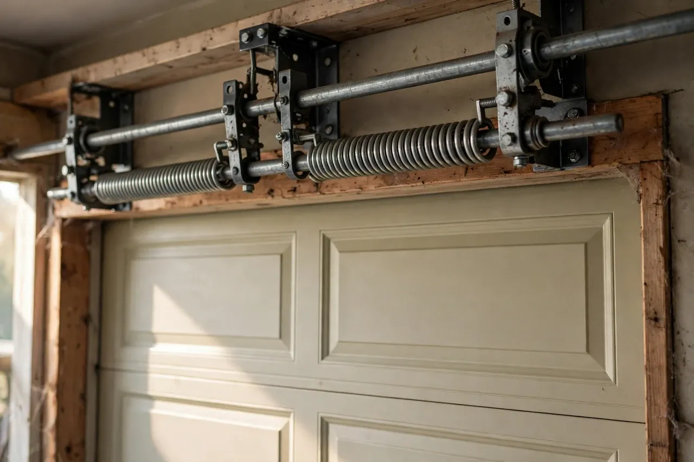

What garage door repairs cost: national guide ranges explained
No Zion repair price guide exists, so this post reports dated national guide ranges only. Every figure is labeled with its source, date, and scope, and none is a quote or this business's price.

Garage door repair costs are hard to pin down from a single number, because the guides that publish them measure different jobs in different ways. This post does the honest thing: it reports the dated national guide ranges read in full for this site, labels every figure with its source, date, and scope, and drops every figure whose scope was unclear or that came only from snippets and secondhand citations.
No Zion repair price guide was found in any source read, and this business publishes no firm pricing. Nothing here is a Zion price, a quote, or this business's price. Use these ranges to understand the shape of repair costs and to ask better questions, then call for this business's price on your door.
What national guides say garage door repairs cost
Start with the overall picture. Housecall Pro (garage door price guide, March 11, 2026) gives a typical repair range of $150-$600 (national guide range, not a quote and not this business's price; scope: typical repair job, national, from aggregated 2026 industry data). That is the only overall typical-repair range kept here, because the other overall averages in the research came from snippets or secondhand citations, or covered broader job mixes that cannot be compared directly, and the report directs that they not be compared or blended.
Within that overall band, the job matters more than the average. A sensor adjustment, a spring set, a cable, an opener repair, and a panel replacement are different jobs with different parts and different labor, and the guides price them separately. The sections below take each in turn, with every figure labeled.
Two framing points apply to every figure that follows. First, service-call and diagnostic framing varies: Housecall Pro (March 11, 2026) gives a basic service call at $75-$150 and minimum service fees at $100-$200 (national guide range, not a quote and not this business's price; scope: travel plus diagnostics for the call figure, and dispatch, diagnostics, and safety setup before parts and labor for the minimum figure; the guide gives both framings and they are reported both, not merged). Whether a fee is credited toward the repair changes the effective total, and this business's fee policy was not supplied, so ask before work begins. Second, labor: Angi (tune-up guide, updated October 15, 2026) gives a garage door repair labor rate of $75-$150 per hour (national guide range, not a quote and not this business's price; scope: national hourly labor rate).
For the service itself, see garage door repair in Zion, IL.
How much do garage door repairs cost in national guides?
The answer depends on which part failed. The table below is in words, because each figure needs its label attached:
- Springs. This Old House (spring guide, updated March 10, 2026) gives torsion springs at $350-$540 total installed, parts only $80-$120 (national guide range, not a quote and not this business's price; scope: explicitly a complete set of springs, via Homewyse), and extension springs at $300-$400 total installed, parts only $20-$60 (national guide range, not a quote and not this business's price; scope: complete set, via Homewyse). Housecall Pro (March 11, 2026) gives torsion work at $200-$500 in its summary table and $200-$600 in its overview and residential table (national guide range, not a quote and not this business's price; scope: flat-rate job pricing; the guide is internally inconsistent and both framings are reported). HomeGuide torsion and extension figures were dropped because that guide does not state whether its figures are per spring or per set.
- Cables. HomeGuide (updated October 27, 2025) gives cable repair at $150-$350 (national guide range, not a quote and not this business's price; scope: cable repair, repair-table figure). This Old House (updated March 10, 2026) gives cable repair at $170-$320 (national guide range, not a quote and not this business's price; scope: cable repair, via Homewyse). Housecall Pro (March 11, 2026) gives cable replacement and repair at $150-$350 (national guide range, not a quote and not this business's price; scope: cable replacement and repair job). HomeGuide also gives spring and cable replacement together at $200-$500 (national guide range, not a quote and not this business's price; scope: combined spring and cable replacement job) and torsion spring and bar replacement at $200-$400 (national guide range, not a quote and not this business's price; scope: complete system including rod).
- Tracks. HomeGuide (updated October 27, 2025) gives replacing tracks at $125-$300 (national guide range, not a quote and not this business's price; scope: replacing tracks, repair-table figure). Housecall Pro (March 11, 2026) gives track alignment at $125-$300 (national guide range, not a quote and not this business's price; scope: track alignment, adjustment time). The two guides agree on the band but describe different scopes, so read the scope label, not just the numbers.
- Openers. HomeGuide (updated October 27, 2025) gives opener repair at $75-$300 (national guide range, not a quote and not this business's price; scope: opener repair, repair-table figure). Angi (updated September 21, 2026) gives repairing a garage door opener at $100-$500 (national guide range, not a quote and not this business's price; scope: opener repair in a replacement-budgeting context). Installed replacement ranges run $213-$900 across guides read (national guide range, not a quote and not this business's price; scope: composite low-to-high across the opener guides cited in the opener section below); the full breakdown is in the opener section below.
- Panels. HomeGuide (updated October 27, 2025) gives panel replacement at $300-$900 per panel (national guide range, not a quote and not this business's price; scope: per panel, repair-table figure). This Old House (updated March 10, 2026) gives panel replacement at $440-$725 (national guide range, not a quote and not this business's price; scope: panel replacement, repair-table figure via Homewyse). Minor dent repair is separate: HomeGuide gives $100-$300 (national guide range, not a quote and not this business's price; scope: minor dents).
- Sensors. HomeGuide (updated October 27, 2025) gives the sensor figure at $85-$100 (national guide range, not a quote and not this business's price; scope: sensor, repair-table figure). Housecall Pro (March 11, 2026) gives safety sensor repair at $100-$250 (national guide range, not a quote and not this business's price; scope: sensor repair including electrical diagnostics). This Old House (opener guide, updated June 5, 2026) gives safety sensors as parts at $40-$80 (national guide range, not a quote and not this business's price; scope: parts only). Parts versus installed-job scope explains the spread; state the scope when citing any of them.
- Locks and glass. HomeGuide (updated October 27, 2025) gives locks at $100-$325 and glass repair at $100-$350 (national guide range, not a quote and not this business's price; scope: repair-table figures).
- Rollers and hinges. No usable roller figure is stated here: the guides read do not state whether their roller ranges cover a full set or a per-roller price, so the figures were dropped. No separate hinge price was found in the guides read, so none is stated. No standalone weatherstripping or seal price was found either, so none is stated.
The honest national picture for springs in particular is a broad spread of about $120-$600 depending on spring type, counting, door, and guide (national guide range, not a quote and not this business's price; scope: the research report's composite conclusion across the guides read), and that breadth itself is the finding. Do not pick one guide's range as the spring price.
What factors affect garage door repair cost
Six factors shape most repair scopes, and only one of them is the door itself.
1. Door size and weight
A double door uses heavier springs, heavier cables, and a stronger opener than a single door. Every part scales with weight, and heavier doors generally mean larger scopes.
2. Spring type and cycle rating
Torsion and extension springs are different systems with different guide ranges, and cycle ratings differ. Springs should be replaced in pairs or sets according to both guides that state lifespans, which affects scope: a set, not a single spring, is the usual job.
3. Opener age and condition
Parts availability and the opener's age shape whether repair or replacement is the sensible discussion. An opener past its 10-to-15-year expected life, or one predating 1993 safety features, changes the calculation toward replacement.
4. Time of day and season
National guides describe emergency and after-hours work as carrying premium terms. Housecall Pro (March 11, 2026) gives an emergency service call at $150-$300 and after-hours labor at 1.5 to 2 times the standard rate (national guide range, not a quote and not this business's price; scope: national contractor-pricing guide). HomeGuide (updated October 27, 2025) states only that evening, weekend, and holiday emergency repairs carry premium charges, with no amount stated. This business's after-hours terms were not supplied, so ask before work begins. Milwaukee Garage Doors Inc is open 24 hours, every day; that is the only availability wording stated here.
5. Access and clearance
Low ceilings, storage above the door, ductwork, or springs boxed in behind finish materials all add time. Labor is the primary cost driver in the guides, so access shapes the scope directly.
6. Whether the door is worth repairing at all
A door with rust-through, rot, or several damaged sections may be a replacement discussion rather than a repair. Compare the repair scope with full-door guide ranges: Angi (updated September 21, 2026) gives a typical full replacement at $754-$1,707 with a national average of $1,231 (national guide range, not a quote and not this business's price; scope: typical replacement, 15,434 verified projects), and the other full-door ranges are collected in the panel cost guide on this blog.
Spring costs in national guides: why the ranges differ
Spring ranges disagree more than any other repair category in the guides, and the reason is counting. This Old House (updated March 10, 2026) is explicit that its figures are for a complete set, via Homewyse: torsion $350-$540 total installed and extension $300-$400 total installed (national guide range, not a quote and not this business's price; scope: complete set). Housecall Pro (March 11, 2026) gives flat-rate job pricing at $200-$500 in one table and $200-$600 in its overview (national guide range, not a quote and not this business's price; scope: flat-rate job pricing). HomeGuide's spring figures were dropped here because the guide does not state its counting unit, and the snippet-only guides were dropped because they were not read in full.
Related spring-system work from HomeGuide (updated October 27, 2025), read in full: torsion spring and bar replacement $200-$400 (national guide range, not a quote and not this business's price; scope: complete system including rod), spring and cable replacement $200-$500 (national guide range, not a quote and not this business's price; scope: combined job), and extension-to-torsion conversion $400-$800 or more (national guide range, not a quote and not this business's price; scope: new torsion hardware including springs, cable drums, and torsion shaft, with professional sizing by door weight). Spring-only annual maintenance is given at $40-$80 (national guide range, not a quote and not this business's price; scope: tension adjustment, lubrication, and safety inspection for springs only, not a full tune-up).
You will usually know when a spring breaks: a loud bang like a firecracker from the garage, then a door that will not lift more than a few inches, or a visible gap in the spring coil. Do not keep running the opener. Every cycle with a broken spring drags the door's weight onto the opener gear and the cables.
For the full spring picture, see garage door spring replacement in Zion, IL and garage door springs: what Zion homeowners should know.
Opener, cable, and panel guide ranges
Opener problems are the second major repair family in the guides. Beyond the repair ranges above, installed replacement is where the spread widens: This Old House (opener guide, updated June 5, 2026) gives a new opener at $213-$371, replacement about $371 including installation (national guide range, not a quote and not this business's price; scope: total including opener, labor, and accessories). HomeGuide (insulated door guide, updated October 15, 2025) gives a new opener at $300-$900 (national guide range, not a quote and not this business's price; scope: including installation labor and the opener). This Old House (spring guide, updated March 10, 2026) gives opener replacement at $430-$730 and automatic opener installation at $500-$860 (national guide range, not a quote and not this business's price; scope: via Homewyse). Housecall Pro (March 11, 2026) gives opener replacement at $300-$800 (national guide range, not a quote and not this business's price; scope: replacement job). Different guides, different scopes, different dates: report the spread, do not pick a winner.
This Old House (opener guide, updated June 5, 2026) also gives installation labor at $132-$183 (national guide range, not a quote and not this business's price; scope: 2-6 hours including removal, assembly, mounting, sensors, power, programming, balance testing, and a tutorial), smart opener units with Wi-Fi and smartphone control at $100-$450 (national guide range, not a quote and not this business's price; scope: smart opener as stated in the guide body), and an add-on smart control at $90-$150 (national guide range, not a quote and not this business's price; scope: add-on control for a non-Wi-Fi opener). Accessory parts in the same guide are given as additional remotes $30-$50, keypad $15-$40, emergency release kit $10-$20, motion sensors $20-$50, and safety sensors $40-$80 (national guide range, not a quote and not this business's price; scope: parts only, retail). Drive-type and horsepower tables were dropped because their scope between unit-only and installed prices was ambiguous in the report.
Cables and panels are covered in the breakdown above. For the service pages, see garage door opener repair in Zion, IL, garage door panel replacement in Zion, IL, and garage door off-track repair in Zion, IL, which covers cable, roller, and track work.
Common mistakes that raise repair costs
The fastest way to enlarge a repair scope is to keep running the door after something breaks. The same mistakes recur in the guides' advice:
- Cycling the opener on a broken spring. This strains the opener drive and can snap a cable, turning a spring job into a spring-and-opener job.
- Greasing the tracks. Tracks should be clean and dry. Grease attracts grit, and grit wears rollers. Lubricant goes on springs, hinges, and rollers, not in the track channel.
- Adjusting springs yourself. Torsion springs hold the door's weight under high tension. Spring and cable work is technician work.
- Ignoring a slow or hesitant door. A door that hesitates is reporting a balance, spring, or opener problem. Early attention is simpler than a later failure.
- Comparing prices without scopes. A range without a source, date, and scope cannot be compared with anything. Ask for the scope in writing and compare like with like.
Regular maintenance is the counterweight. Angi (tune-up guide, updated October 15, 2026) gives a nationwide tune-up range of $100-$240 (national guide range, not a quote and not this business's price; scope: full tune-up including bolt tightening, lubrication, inspection of rollers, cables, springs, shafts, bearing plates, and tracks, track leveling, tension checks, opener and photo-eye checks, debris removal, and rust and weatherstrip check, with larger repairs and parts extra). This Old House (spring guide, updated March 10, 2026) gives a tune-up at $120-$240 (national guide range, not a quote and not this business's price; scope: repair-table figure, via Homewyse). This Old House (opener guide, updated June 5, 2026) gives opener-only annual maintenance at $75-$150 (national guide range, not a quote and not this business's price; scope: opener-focused checkups only, narrower than a full tune-up). See garage door maintenance in Zion, IL.
When to call a professional
Call a professional the moment the door will not open or close smoothly, the opener strains or hums without moving the door, you see a cable hanging loose, you hear a bang from the garage, or the door hangs crooked or comes off its track. Those signals mean a part has failed, and every one of them can get worse with use.
Milwaukee Garage Doors Inc is open 24 hours, every day. Call (224) 842-7761 and describe what the door is doing. Homes across Zion, including garage doors in Central Zion, IL and garage doors in South Central Zion, IL, include older doors where spring, cable, and roller wear is common with age.
Frequently Asked Questions
What do national guides say garage door repairs cost?
Housecall Pro (March 11, 2026) gives a typical repair range of $150-$600, a national guide range, not a quote and not this business's price. Springs, cables, openers, panels, tracks, and sensors each have their own labeled ranges in the guides, and no Zion repair price was found in any source read.
What factors affect garage door repair cost?
Door size and weight, spring type and cycle rating, opener age and condition, time of day and season, access and clearance above the door, and whether the door is worth repairing at all. Labor is the primary cost driver in the national guides, so anything adding time adds scope.
Is garage door repair worth it in Zion?
Usually, when the door itself is structurally sound and the fault is a wear part such as a spring, cable, roller, or opener component. When the door has rust-through, rot, or several damaged sections, compare the repair scope with full-door national guide ranges before deciding.
How can I keep garage door repair costs down?
Stop using the door the moment something breaks, do not cycle the opener on a broken spring, keep up with regular checks and lubrication of the right parts, and catch wear early. Agree the scope in writing before work begins and compare like with like.
What does a garage door repair visit involve?
Inspection of the door, springs, cables, rollers, tracks, and opener; finding the failed part and its cause; agreeing the scope; carrying out the repair; and testing full travel with the safety reverse and sensors. No time promise is made here; the scope depends on what is found.
Get help with Garage Doors in Zion
If your door is stuck, noisy, or off its track, call Milwaukee Garage Doors Inc at (224) 842-7761. We are open 24 hours, every day.
Read about garage door repair in Zion, IL and garage doors in Central Zion, IL, or go to contact Milwaukee Garage Doors Inc.